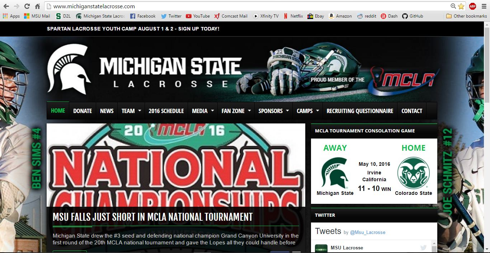
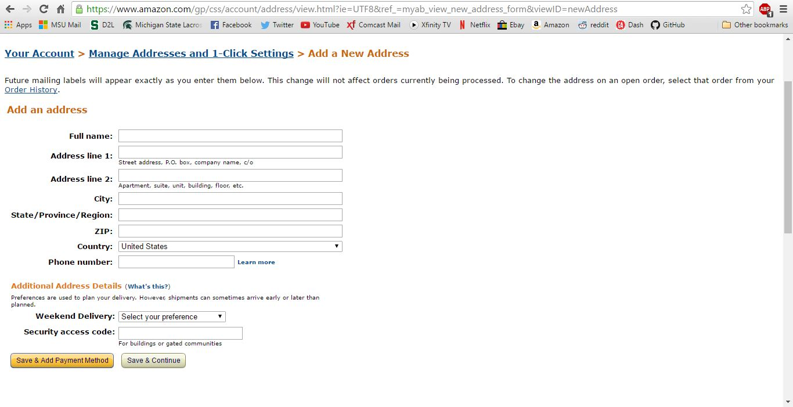

1) My first example is of Hick's Law. I chose this website because it has a great amount of wine it offers. This website offers many different filters for the buyer to make a decision on what he/she truely wants.

2) My second example is of the Rule of Third's. I chose this website because it uses pictures to attract your intrests. The top left corner has a search bar and asking if you want to follow more. And as your eye scans it sees new appealing pictures.
3) My third example is of Ockham's Razor. I chose spotify as my example of this. The reason I chose this website was because Spotify's homepage is very simplistic. There isn't much going on and simplier is better according to this rule.
4) My fourth example is of the Golden Ratio. The golden ratio is having the perfect amount of the main subject and the side subject. I belive this site does this well by having the main subject area on the left and is larger than the side subject area. 
5) My fifth example is of the 80/20 Rule. I chose Amazon as an example because it is a very popular site. This rule is saying 80% of the outcomes is coming from 20% of the input. So my example was in this screenshot. The country of the United States was already placed in that spot without my input. That is because it is mostly likely that I am from the United States so they are focused on me. 